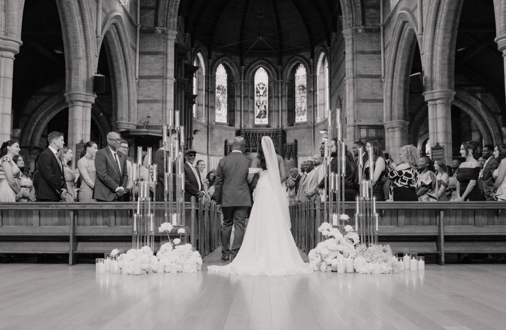
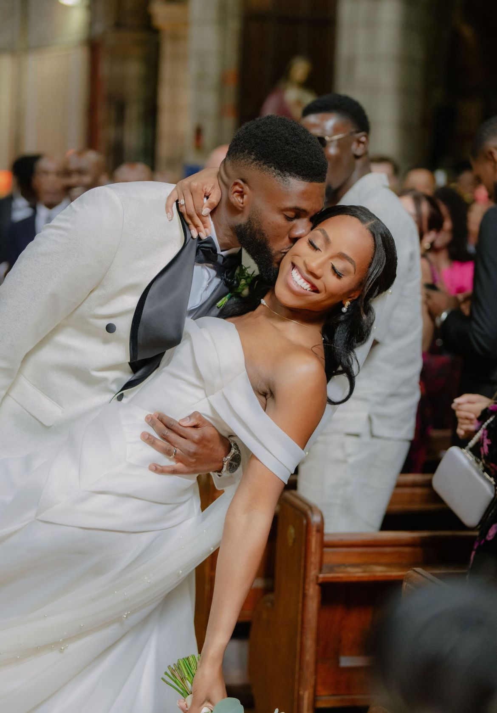
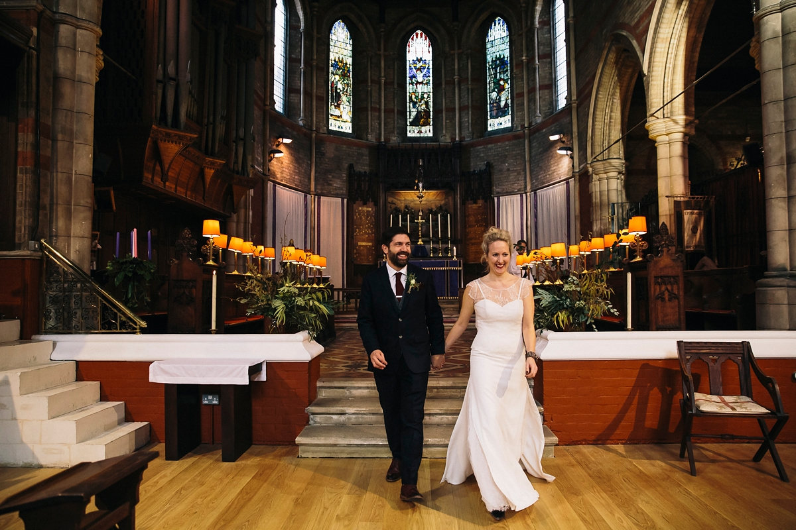

We love weddings — and are always delighted to pray for and accompany couples as they take this important step.
If you are engaged and considering getting married at Emmanuel or St Cuthbert's, we would love to hear from you!
We love weddings and are always delighted to pray for and accompany couples as they take this important step. We warmly encourage couples to attend three or four marriage preparation sessions ahead of the wedding day; these will be arranged between the priest and the couple, and will ensure that sessions are compatible with work and other commitments.
If you would like to know more about weddings in either of our churches, please contact the parish office in the first instance and a member of the clergy will be in touch.
If you live in the parish, it is very straightforward. If you don't, we need to establish whether you have a qualifying connection — you only need one of the following:



Tell us a little about you and your plans, and a member of the clergy will be in touch to talk through the next steps.